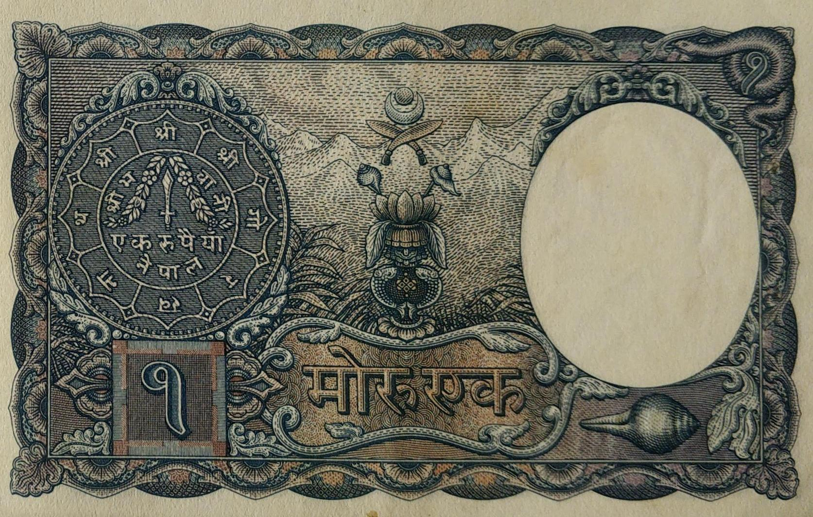
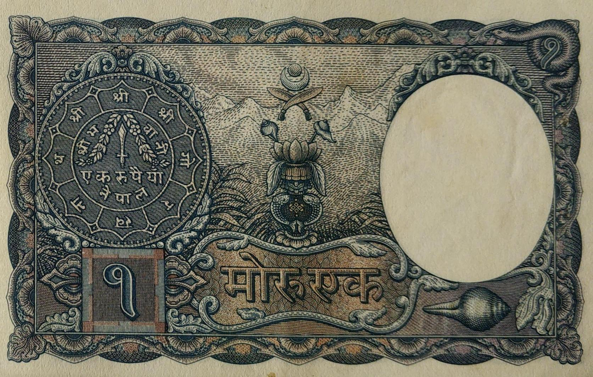

- Domination: Mohru 1
- Khajanchee: 3-Pandit Narendra Raj Pandey
- Printer: Indian Security Press, Nashik, India
- Issued date: Between 1953 & 1960
- Front: One rupee coin at right with date 2008, elephant in underprint
- Back: Reverse side of the one rupee coin at left, a holy vast at center, mountains in underprint
- Watermark: King Tribhuwan wearing plumed crown
- Size: 65 x 101 mm
 

Pandit Narendra Raj Pandey (Jan 22, 1952 to April 22, 1956)